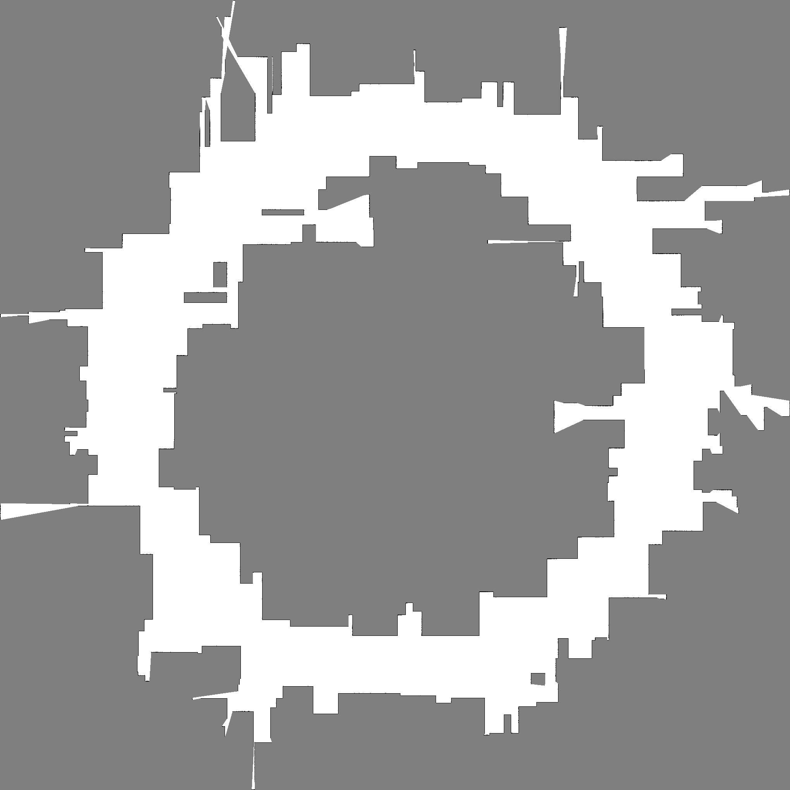
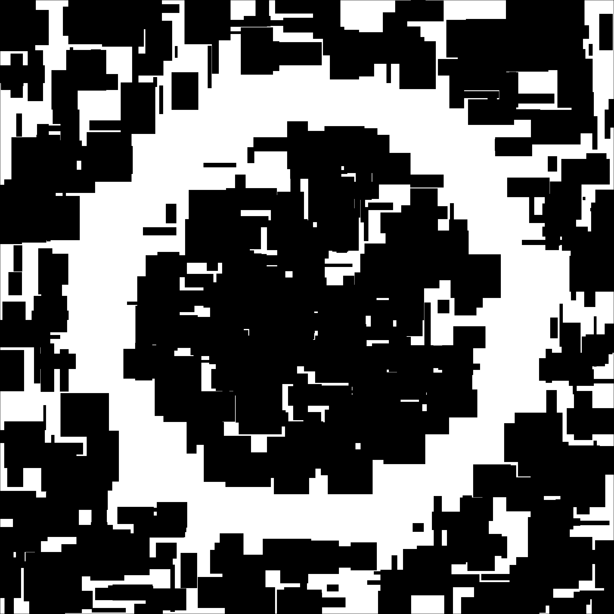

I implement a serial baseline for a robotics mapping task: building a 2D occupancy grid map from many LiDAR scans.
The map is a grid of cells. Each cell stores how likely it is occupied by an obstacle. The robot moves along a trajectory and takes scans with many beams. Each beam says either:
This is a realistic robotics workload because mapping is used in mobile robot navigation and autonomous systems, and ray casting + grid updates are computationally heavy.
Source file: raycast_mapping.cc
true_occ)
with wall boundaries and random rectangular obstacles.scans robot poses on a circle
(path_radius) around the map center.beams directions, run DDA
grid traversal until:
max_range is reached.est_logodds).main_compute_seconds for the mapping loop.--out-ppm) for visual
inspection.Compile and run example:
clang++ -O3 -Wall -std=c++17 raycast_mapping.cc -o raycast_mapping
./raycast_mapping --width 1024 --height 1024 --scans 1500 --beams 720 --max-range 220 --obstacles 140 --path-radius 300Tested preset on Miyabi (serial baseline):
%%sub
cd code
./raycast_mapping \
--seed 42 \
--width 2040 \
--height 2040 \
--scans 80000 \
--beams 4320 \
--max-range 600 \
--obstacles 600 \
--path-radius 700 \
--out-ppm map.ppm \
--out-gt-ppm map_gt.ppmObserved runtime for this preset: about 168 seconds.
Main size knobs:
--width, --height (grid size)--scans (number of robot poses)--beams (beams per scan)--max-range (ray length)--obstacles (map complexity)--path-radius (trajectory size)Output images from the above run:
map.ppm (converted preview:
map.png)map_gt.ppm (converted
preview: map_gt.png)

The workload has large data parallel structure.
Possible mappings:
Main expected limits to speedup: